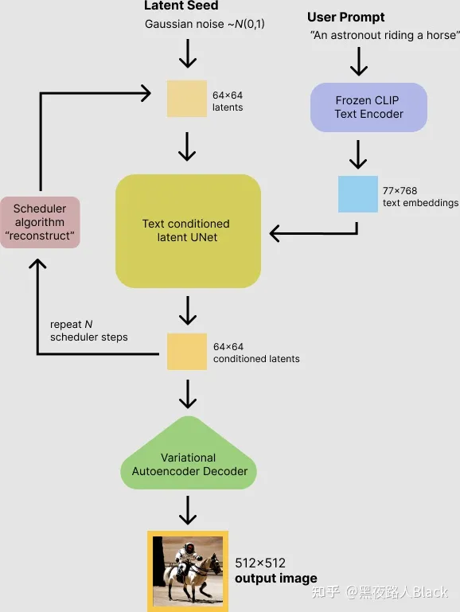
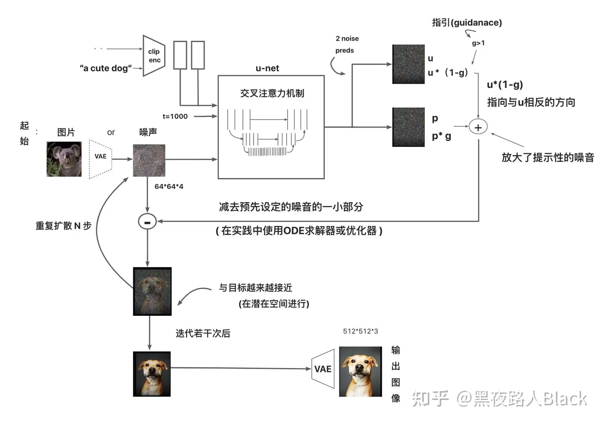

To_Do_List
- 如何判断一个问题时np难问题
- mac item2 各种plugin
- 命令行里无法使用vpn连接
NJU课程
概率论与数理统计
-
作业为书上习题 两周一交
-
南大教材
-
作业会比较严格----每个双周的周三~周日交作业
DS
-
oj+qq群布置的手写作业
-
书籍：数据结构与算法分析
并发算法与理论
课程主页
- ppt在课程主页上
- 教材《多处理器编程的艺术》
-
考核：提交作业 + course report
最优化方法导论
课程主页
- Lecture Notes will be updated after every lesson
- Referrence: Convex Optimization, Stephen Boyd and Lieven Vandenberghe
课程笔记
-
考核: HW: Final Exam:
密码学原理

- ppt + 教材
-
考核: 6* HW + 2* exam
人工智能导论
课程主页
-
教材《人工智能一种现代的方法》-AIMA
-
学习新的游戏框架
-
考核：4+1 LAB + 期末论文
搜索与演化算法
课程主页
考核: HW(60%) + Final Exam(40%)
科研实践
-
微信群通知 + 组会
-
读论文+实践
To do list
机器学习
- 吴恩达课程 ✔
- 书籍
- CS229
python学习
- NunPy
- Pytorch
c++学习
- 异常及其处理 ✔
- 调试方法
- 线程管理
科研实践
- 图像处理与检测
xcpc-acm
- hdu_03 1002 1004 1008
- 牛客_04 B
- hdu_09 1002 1008 1011
科研实践
英文：
Latent Diffusion论文：https://arxiv.org/pdf/2112.10752.pdf
Diffusion Models详细公式：https://lilianweng.github.io/posts/2021-07-11-diffusion-models/
各种微调模型方法对比：https://www.youtube.com/watch?v=dVjMiJsuR5o
Scheduler对比图来自论文: https://arxiv.org/pdf/2102.09672.pdf
柯基图来自DALLE2论文：https://cdn.openai.com/papers/dall-e-2.pdf
CLIP模型的介绍：https://github.com/openai/CLIP
OpenCLIP：https://github.com/mlfoundations/open_clip
Textual Inversion: https://textual-inversion.github.io/
LoRA论文：https://arxiv.org/pdf/2106.09685.pdf
Dreambooth 论文：https://arxiv.org/pdf/2208.12242.pdf
ControlNet 论文：https://arxiv.org/pdf/2302.05543.pdf
简单易懂的 Diffusion Model 解释：https://www.youtube.com/watch?v=1CIpzeNxIhU
很棒的Stable Diffusion解释：https://jalammar.github.io/illustrated-stable-diffusion/
同样很棒的SD解释：https://medium.com/@steinsfu/stable-diffusion-clearly-explained-ed008044e07e
中文：
Stable Diffusion UNET 结构：https://zhuanlan.zhihu.com/p/582266032
- 需要注意的是，在整个 UNET 执行一次的过程中，timestep_embedding 和 content embedding 始终保持不变。而在 UNET 反复执行多次的过程中，timestep_embedding 每次都会发生变化，而 content embedding 始终保持不变。在迭代过程中，每次 UNET 输出的 noise_slice 都原有的 latent 向量相减，作为下次迭代时，UNET 的 Latent 输入。

很棒的Stable Diffusion解释：https://blog.csdn.net/yujianmin1990/article/details/129143157
- 采样噪声被预测了出来，所以如果我们从图像中减去它就能得到尽可能接近于模型训练样本的图像（不是精准的图像本身，而是分布，像素分布的世界里呈现起来天空通常是蓝色，人类有两个眼，小猫看向某个方向，耳朵竖起且专注）。
Stable Diffusion非常详细的介绍：https://zhuanlan.zhihu.com/p/621493124
-
第一步，Prompt Encoder过程（Text Encoder）
模型将潜在空间的随机种子和文本提示词（Prompt）同时作为输入，然后使用潜在空间的种子生成大小为64×64的随机潜在图像表示，通过CLIP的文本编码器将输入的文本提示转换为大小为77×768的文本嵌入。 -
第二步，使用U-Net进行Diffusion过程
使用经过修改，含注意力机制的U-Net，在接受文本嵌入作为注意力机制计算对象的同时迭代地对随机潜在图像表示进行去噪。 U-Net 的输出是噪声的残差，用于通过scheduler 程序算法计算去噪的潜在图像表示。 scheduler 算法根据先前的噪声表示和预测的噪声残差计算预测的去噪图像表示。去噪过程重复约50-100次，这样可以逐步检索更好的潜在图像表示。许多不同的 scheduler 算法可以用于这个计算，每一个都有它的优点和缺点。对于Stable Diffusion，可以使用包括 PNDM scheduler、DDIM scheduler+PLMS、K-LMS scheduler等。 -
第三步，潜在图片通过VAE进行解码
一旦上面步骤完成，潜在图像表示就会由变分自编码器的解码器部分进行解码，输出图片，步骤完成。
（上面三个步骤的主要工作流程图）
万字长文讲解Stable Diffusion的AI绘画基本技术原理
- 关于stablediffusion较底层的原理可以查看上面这篇文章，文末附有各个组件的原始论文+源码。
- 公开课｜吴恩达 CS229
吴恩达在斯坦福教授的机器学习课程 CS229 与 吴恩达在 Coursera 上的《Machine Learning》相似，但是有更多的数学要求和公式的推导，难度稍难一些。该课程对机器学习和统计模式识别进行了广泛的介绍。
课程主页： http://cs229.stanford.edu/
中文视频： http://open.163.com/special/opencourse/machinelearning.html
中文笔记： https://kivy-cn.github.io/Stanford-CS-229-CN/#/
速查表： 这份资源贡献者是一名斯坦福的毕业生 Shervine Amidi。作者整理了一份超级详细的关于 CS229的速查表 https://zhuanlan.zhihu.com/p/56534902
作业代码： https://github.com/Sierkinhane/CS229-ML-Implements
- 公开课｜李宏毅机器学习
课程主页： 最新2021年课程 https://speech.ee.ntu.edu.tw/~hylee/ml/2021-spring.html
BiliBili： https://www.bilibili.com/video/BV1JE411g7XF?from=search&seid=4319647467302480504&spm_id_from=333.337.0.0
学习笔记： https://github.com/datawhalechina/leeml-notes
教学视频作为入门是绝佳的，但是口语化的教学不利于学习过程中对细节的考究，因此后面推荐一些书籍。
- 书籍｜《机器学习》
周志华的《机器学习》被大家亲切地称为“西瓜书”。这本书非常经典，讲述了机器学习核心数学理论和算法，适合有作为学校的教材或者中阶读者自学使用，入门时学习这本书籍难度稍微偏高了一些。
读书笔记： https://www.cnblogs.com/limitlessun/p/8505647.html#_label0
公式推导： https://datawhalechina.github.io/pumpkin-book/#/
课后习题： https://zhuanlan.zhihu.com/c_1013850291887845376